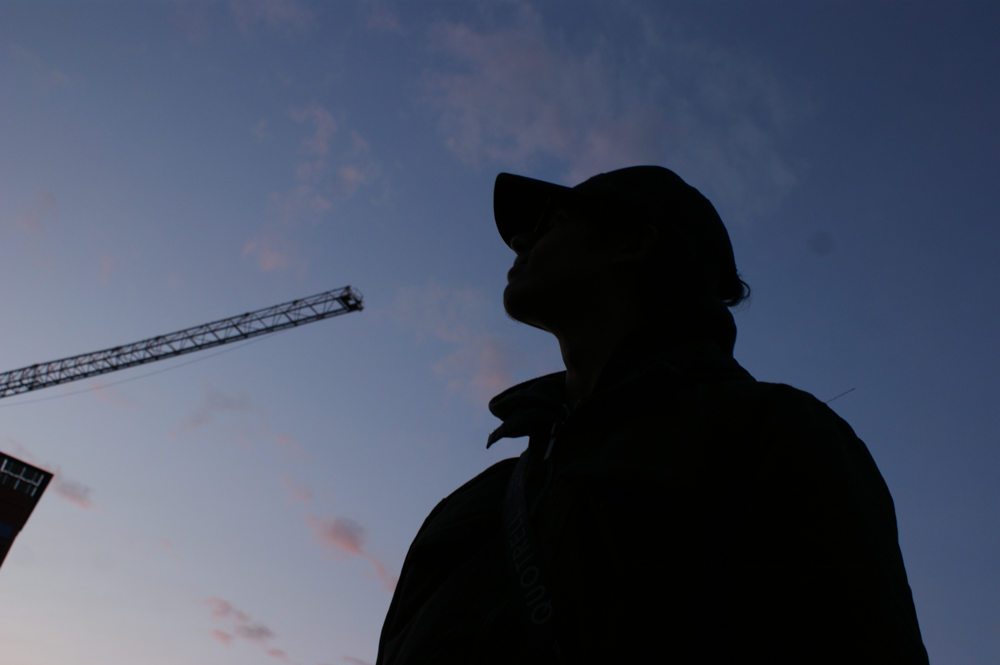
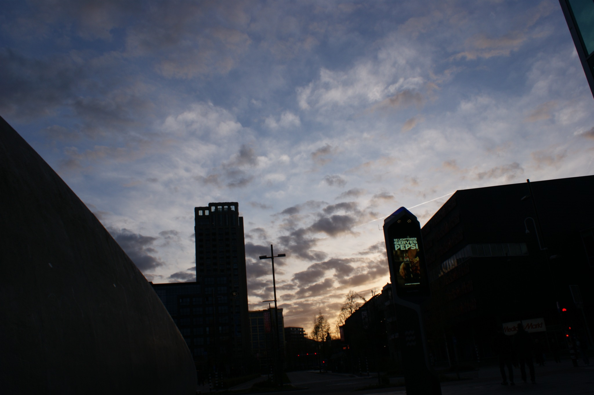
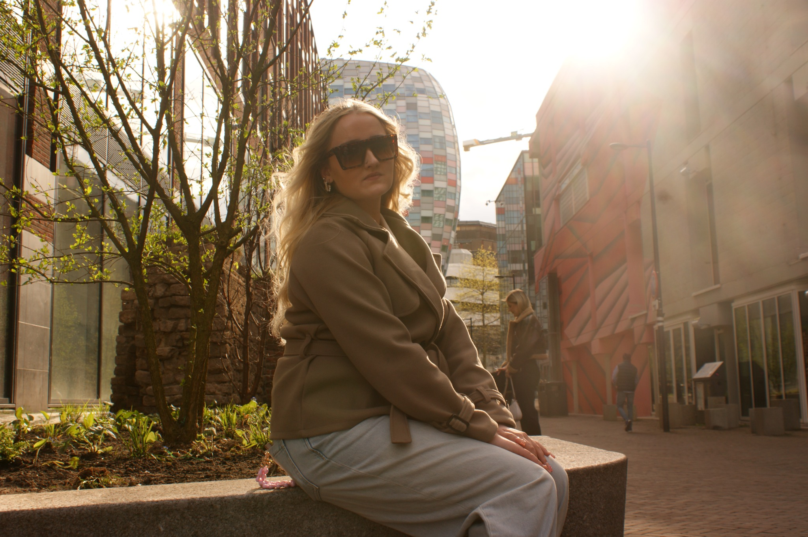

Bruiloften
De sfeer, details en momenten van jullie dag op een persoonlijke manier vastgelegd.
PHOTOGRAPHY • CREATIVE • VISUALS
Creatieve fotografie voor momenten, mensen, auto's, events en verhalen die gezien mogen worden.
LESLOY VISUALS
Ik denk altijd creatief met je mee en zoek naar beelden die niet alleen mooi zijn, maar ook passen bij jou en het verhaal dat je wilt vertellen.
SELECTED WORK
Een selectie van mijn werk. Van cityscapes en portretten tot persoonlijke shoots.





WHAT I DO
Geen vaste hokjes. Vertel wat je in gedachten hebt en we maken er samen iets van.
De sfeer, details en momenten van jullie dag op een persoonlijke manier vastgelegd.
Strakke beelden van auto's, builds, shoots en content voor social media.
Van persoonlijke portraits tot fashion en lifestyle — passend bij jouw uitstraling.
De energie van een event vastgelegd in beelden die het verhaal compleet maken.
Een shoot voor jezelf, samen met iemand anders of gewoon omdat je iets moois wilt maken.
Heb je een idee? Ik denk mee over concept, locatie, compositie en uitvoering.
THE PERSON BEHIND THE CAMERA
Lesloy Visuals is mijn creatieve fotografiebedrijf. Ik hou ervan om gewone momenten op een andere manier te bekijken en er een beeld van te maken dat karakter heeft.
Of het nu gaat om een bruiloft, auto, portret, event of een idee dat je zelf nog niet helemaal kunt uitleggen: ik denk met je mee en vertaal het naar beeld.
@Lesloy.0492 op Instagram ↗LET'S CREATE
Stuur me een bericht met wat je wilt laten maken, wanneer en waar. Dan kijken we samen wat mogelijk is.
Neem contact op via Instagram